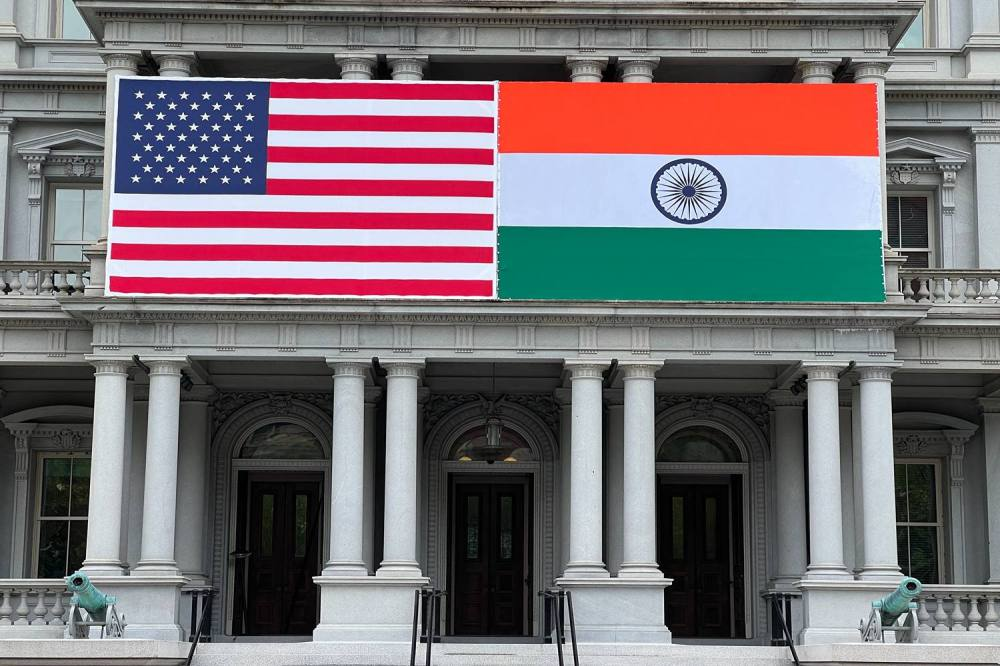

Modi-Biden Meeting: U.S. Desire for India to Counter China Shouldn't Trump Democracy
Image Credits https://foreignpolicy.com/2023/06/21/modi-biden-meeting-china-counter-arms-sales-democracy-economy/
India and the United States have been strategic partners for decades, sharing common interests in trade, defense, and regional stability. However, the recent Modi-Biden meeting has signaled a possible shift in the relationship, with the U.S. emphasizing the need for India to counter China's growing influence in the region.
While it's understandable that the U.S. would want India to be a strong partner in its efforts to contain China, it shouldn't come at the cost of democracy and human rights in India. In this article, we'll explore why the U.S. desire for India to counter China shouldn't trump democracy, and why it's important for both nations to work together in a way that upholds their shared values.
The United States must be able to rely on a democratic India that upholds the rule of law, respects fundamental freedoms, and ensures equal treatment of all its citizens.
The Importance of Democracy in India
India is the world's largest democracy, with a population of over 1.3 billion people. However, in recent years, there have been growing concerns about the state of democracy in the country. The Modi government has been accused of suppressing dissent and cracking down on civil society organizations and the media.
According to a report by Freedom House, India's status has declined from "Free" to "Partly Free," due to "increasing pressure on human rights organizations, intimidation of journalists and activists, and a spate of bigoted attacks, including lynchings, aimed at Muslims." This is a worrisome trend that deserves attention from both the Indian government and its partners.
Why India Shouldn't Compromise on Democracy
India's democracy is a source of pride for its people and a key factor in its success as a nation. It's also an important example to other nations in the region and beyond, demonstrating that democracy can work in a diverse, complex society. For India to compromise on democracy in order to please its partners would be a detrimental move, both for its people and for its reputation on the global stage.
Furthermore, compromising on democracy would play right into China's hands. China has been quick to point out the U.S.'s human rights abuses and democracy failures, using it as a way to strengthen its own standing on the global stage. If India were to follow suit, it would give legitimacy to China's propaganda and make it more difficult for the U.S. to effectively counter China's influence in the region.
Case Studies: Balancing Democracy and Partnerships
It's not easy to balance democracy and partnerships, but it's crucial to do so in order to ensure long-term success for both. Here are a few examples of countries that have struggled to find this balance:
- Egypt: The U.S. has been a longtime partner of Egypt, providing billions of dollars in military aid and support. However, Egypt's government has become increasingly authoritarian in recent years, cracking down on dissent and limiting political freedoms. The U.S. has been criticized for not doing more to pressure Egypt to reform, despite concerns about human rights abuses.
- Myanmar: Myanmar is a key partner for China's Belt and Road Initiative, but its government has been accused of carrying out genocide against the Rohingya ethnic minority. Despite this, China has continued to provide political and economic support to Myanmar, while the U.S. and other countries have imposed sanctions and limited ties in response.
- Saudi Arabia: Saudi Arabia is a key partner for the U.S. in the Middle East, but its government has been accused of human rights abuses and limiting political freedom. The U.S. has walked a fine line in its relationship with Saudi Arabia, providing support for its defense while also criticizing its policies and pushing for human rights reforms.
Conclusion: Balancing Democracy and Strategic Partnerships
The Modi-Biden meeting marks an important moment in the U.S.-India relationship, and a potential turning point in how the two nations work together. While it's important for India to counter China's growing influence, it shouldn't come at the cost of democracy and human rights. For the U.S. to effectively partner with India in this effort, it must uphold its own values and prioritize democracy and freedom, both at home and abroad.
To successfully balance democracy and strategic partnerships, both nations must commit to open dialogue, transparency, and mutual respect. Only then can they achieve their shared goals of regional stability and prosperity, while also upholding the values that define them as nations.
Curated by Team Akash.Mittal.Blog
Share on Twitter Share on LinkedIn